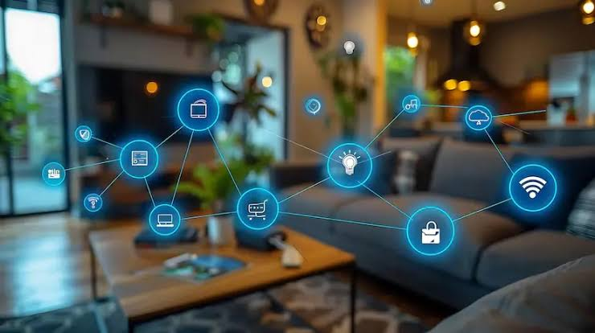

Hogares Inteligentes (Domotica)
Sistemas automatizados que integran termostatos inteligentes, iluminacion adaptativa y cerraduras conectadas para maximizar el confort y la eficiencia energetica residencial.
- Optimizacion predictiva del consumo electrico y climatizacion.
- Seguridad proactiva con camaras y sensores de presencia conectados.
- Interoperabilidad garantizada mediante estandares modernos como Matter y Zigbee.